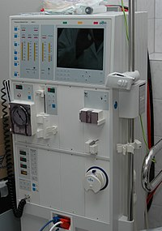

FCIH Hospital
Your Health Is Our Proiority
Dialysis may be used in those with rapidly developing loss of kidney function, called acute kidney injury (previously called acute renal failure); or slowly worsening kidney function, called Stage 5 chronic kidney disease, (previously called chronic kidney failure and end-stage renal disease and end-stage kidney disease).
A hemodialysis machine
Dialysis works on the principles of the diffusion of solutes and ultrafiltration of fluid across a semi-permeable membrane,Blood flows by one side of a semi-permeable membrane, and a dialysate, or special dialysis fluid, flows by the opposite side. A semipermeable membrane is a thin layer of material that contains holes of various sizes, or pores. Smaller solutes and fluid pass through the membrane, but the membrane blocks the passage of larger substances (for example, red blood cells, large proteins). This replicates the filtering process that takes place in the kidneys when the blood enters the kidneys and the larger substances are separated from the smaller ones in the glomerulus.
The decision to initiate dialysis or hemofiltration in patients with kidney failure depends on several factors. These can be divided into acute or chronic indications.
Main article: Peritoneal dialysis In peritoneal dialysis, a sterile solution containing glucose (called dialysate) is run through a tube into the peritoneal cavity, the abdominal body cavity around the intestine, where the peritoneal membrane acts as a partially permeable membrane.(eluma,2017)
This exchange is repeated 4–5 times per day; automatic systems can run more frequent exchange cycles overnight. Peritoneal dialysis is less efficient than hemodialysis, but because it is carried out for a longer period of time the net effect in terms of removal of waste products and of salt and water are similar to hemodialysis. Peritoneal dialysis is carried out at home by the patient, often without help. This frees patients from the routine of having to go to a dialysis clinic on a fixed schedule multiple times per week. Peritoneal dialysis can be performed with little to no specialized equipment (other than bags of fresh dialysate).
In research laboratories, dialysis technique can also be used to separate molecules based on their size. Additionally, it can be used to balance buffer between sample and the solution "dialysis bath" or "dialysate"[2] that the sample is in. For dialysis in a laboratory semipermeable membrane is used as a tube made of cellulose acetate or nitrocellulose[3] where pore size can vary according to the size separation required. Control over pore size allows a better separation between small molecules while leaving large molecules of interest inside. Solvents, ions diffuse easily through the pores while leaving the big molecules behind and separate.[clarification needed] In protein purification technique dialysis is used to exchange buffers, loose smaller proteins that can pass through the pores, dilutions of concentrated salts, while leaving the protein of interest inside the semipermeable membrane separated.
Dr. Suzanne Norby is a nephrologist in Rochester, Minnesota and is affiliated with Mayo Clinic. She received her medical degree from University of Wisconsin School of Medicine and Public Health and has been in practice for more than 20 years. Dr. Norby accepts several types of health insurance, listed below. She is one of 41 doctors at Mayo Clinic who specialize in Nephrology.
| Years in Practice | 21+ |
| Gender | Female |
| Doctor Type | Hospitalist |
| Board Certifications | Internal Medicine, Nephrology |
| Languages | English |
Among the top stories from the National Kidney Foundation Spring Clinical Meetings are a presentation that showed fluid resuscitation is critical when initially treating septic shock and a poster about the potential benefits of probiotics for patients with end-stage renal disease. Other stories include findings about the potential impact of plant-based diets on diabetes, a keynote address about the need for nephrology providers to shift their focus to the health outcomes of patients and data on the mortality rate of Medicare patients on dialysis.
New information about the state of the nephrology workforce is now available in the recently released U.S. Nephrology Workforce 2015 Development and Trends report prepared for the ASN by the George Washington University (GWU) Health Workforce Institute. Data in the report’s executive summary confirms an ongoing disturbing trend, with an 8% drop in new nephrology fellows in 2014 and the prediction of a further drop in 2015. This decrease in the supply of nephrologists may be only one side of the story since some data suggests that the demand for nephrologists may decrease if health care delivery models continue to change.